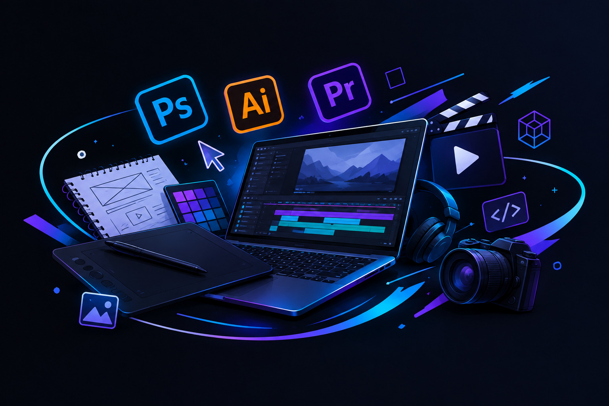
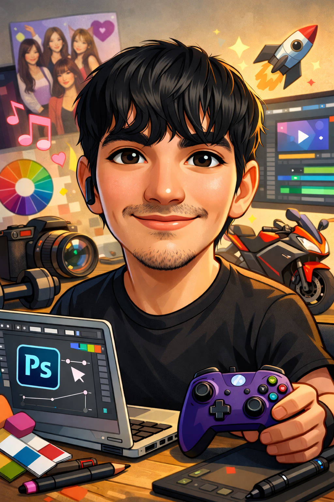
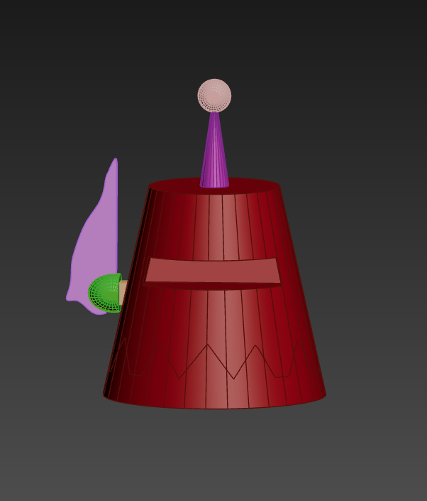
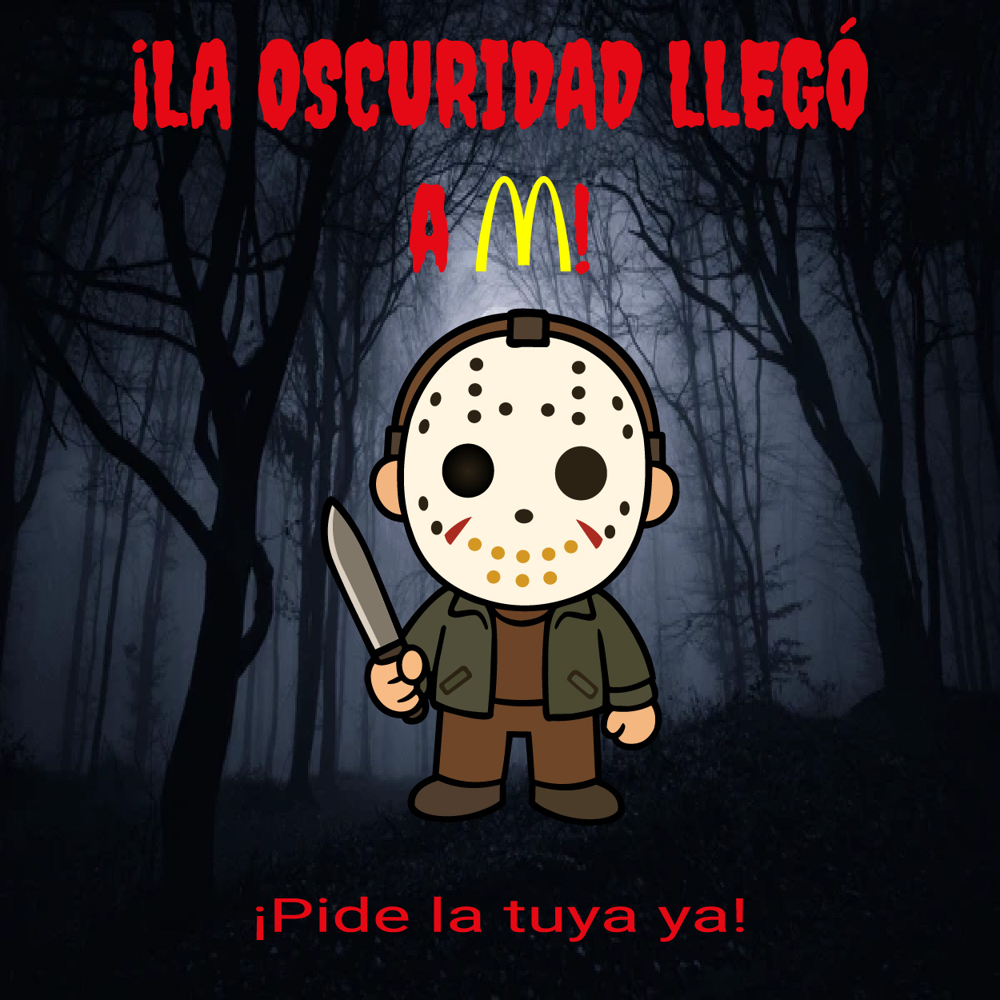
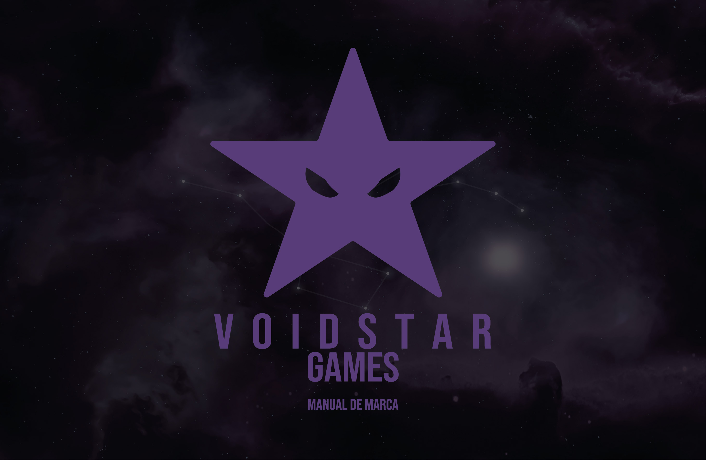

Hola, soy Juan Ramírez
Estudiante de Ingeniería Multimedia especializado en convertir ideas en piezas visuales — desde el modelado 3D hasta la animación y la ilustración digital.


Perfil
Soy Juan Ramírez, estudiante de Ingeniería Multimedia en la Universidad Simón Bolívar. Me interesa todo lo que tiene que ver con contar historias a través de imágenes: desde un boceto rápido hasta un render terminado, pasando por la fotografía y la animación.
Disfruto explorar cómo las herramientas de inteligencia artificial pueden acelerar procesos creativos sin reemplazar el criterio y el detalle que aporta el diseñador. Mi meta es seguir creciendo en estas disciplinas y, en los próximos años, formar parte de una compañía de tecnología o entretenimiento con proyección internacional.
- 01Investigar referencias visuales y definir el objetivo del proyecto.
- 02Bocetar y prototipar rápidamente en 2D o 3D para validar la idea.
- 03Producir la pieza final: modelado, animación, ilustración o fotografía.
- 04Revisar, ajustar y entregar el proyecto terminado.
Áreas de trabajo
Cuatro disciplinas que se apoyan entre sí en cada proyecto.

Diseño 3D
Modelado
Modelado de piezas y escenas, pensadas tanto para animación como para presentación estática.

Ilustración digital
Concepto y color
Arte conceptual y piezas terminadas, cuidando la paleta de color, la luz y la composición.

Diseño gráfico
Identidad visual
Tipografía y piezas gráficas para proyectos propios y de terceros.
Animación 2D
Movimiento y ritmo
Secuencias cortas y motion graphics, con atención especial al timing y al ritmo.